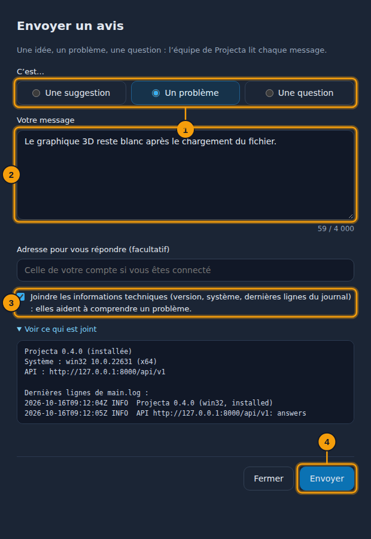
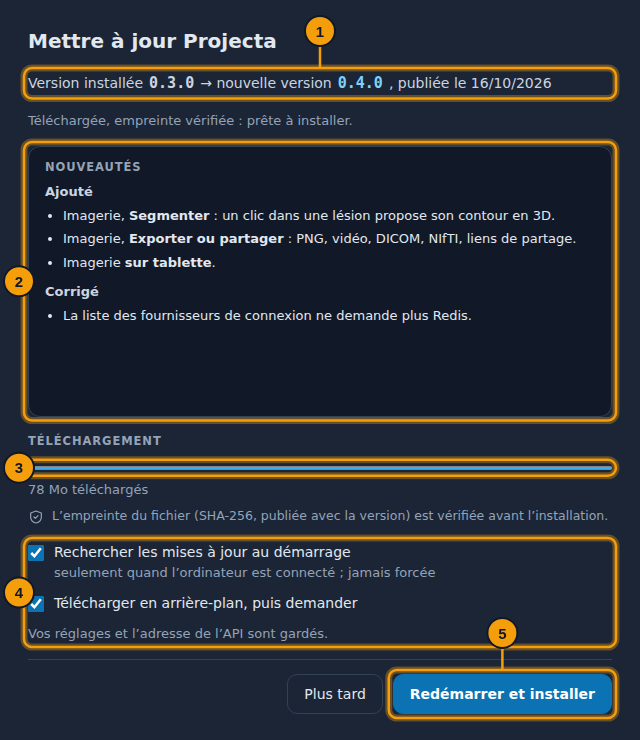

Application de bureau¶
Projecta existe aussi en application Windows, avec le même tableau de bord.
Télécharger¶
Télécharger pour Windows Version portable
Version 0.7.1, pour Windows 10 et 11 (64 bits). Les versions précédentes
et les empreintes SHA-256 (SHA256SUMS.txt) sont sur la
page des versions. Une fois installée, l’application se met à
jour d’elle-même (Aide › Rechercher des mises à jour…).
| Fichier | Usage |
|---|---|
Projecta-Setup-<version>.exe |
l’installe, avec des raccourcis sur le bureau et dans le menu Démarrer |
Projecta-<version>-portable.exe |
se lance sans installation (une clé USB, un poste sans droits d’administrateur) |
« Windows a protégé votre ordinateur »
L’application n’est pas encore signée : au premier lancement, choisir Informations complémentaires, puis Exécuter quand même.
Ce guide s’ouvre dans l’application par F1.
Le serveur¶
L’application lit vos données sur Projecta en ligne : rien d’autre à installer, créez votre compte au premier lancement. Au démarrage, une barre Connexion à Projecta avance jusqu’à ce que le serveur réponde (après une pause, il met quelques secondes à se réveiller ; l’application l’attend jusqu’à 30 s). S’il ne répond pas (pas d’Internet), l’écran Échec de la connexion à Projecta le dit, et un nouvel essai a lieu de lui-même (après 15 s, puis 30 s, puis toutes les minutes) : rien à faire, vos données restent sur le serveur. Un autre serveur, par exemple celui de votre service, se choisit dans Fichier › Adresse de l’API….
Des données de démonstration seulement
Projecta en ligne est un serveur partagé : n’y envoyez que des données de démonstration ou déjà anonymisées, jamais de vraies données de patients.
Travailler sans connexion¶
Quand la connexion à Projecta échoue (pas d’Internet, serveur arrêté), l’application continue avec ce qui est sur l’ordinateur :
- Ce que vous avez ouvert reste lisible : vos espaces, les jeux de données et leurs pages consultées, les visualisations, les examens ouverts (anonymisés). Un bandeau et la pastille Hors ligne · n changements en attente le disent.
- Vos changements (le domaine ou les colonnes d’un espace, l’historique, les mesures et le compte rendu d’un examen) attendent la reconnexion ; la pastille ouvre leur liste, chacun peut être annulé.
- Un nouvel essai a lieu de lui-même (15 s, 30 s, puis chaque minute). À la reconnexion, les changements partent dans l’ordre ; si le même élément a aussi changé en ligne entre-temps, l’application demande lequel garder (pour les mesures : les deux, au choix).
- En ligne seulement : charger un fichier, une base, le PACS, l’assistant et les nouveaux calculs (visualisations, mesures d’une ROI).
- Au démarrage sans connexion, Continuer hors ligne ouvre ce qui est gardé.
Ce qui est gardé est chiffré pour votre compte Windows et effacé à la déconnexion ; après 7 jours sans connexion, il faut se reconnecter. Compte › Paramètres › Hors ligne : l’activer ou non, garder les examens, la place sur le disque, tout effacer.
Ouvrir un fichier avec Projecta¶
Une fois installée, l’application s’ajoute au menu Ouvrir avec de
l’Explorateur Windows (clic droit sur un fichier) pour les fichiers CSV,
TSV, Excel, Parquet, JSON, YAML, DICOM (.dcm), NIfTI (.nii) et les
.zip d’examens. Toujours ouvrir avec Projecta en fait l’application
de ce type (un double-clic suffit ensuite).
- Un jeu de données est importé, puis ouvert dans l’aperçu.
- Des images médicales ouvrent Ouvrir des images médicales, le fichier déjà choisi : vous décidez de l’anonymisation, puis Ouvrir l’examen.
Si vous n’êtes pas connecté, le fichier attend la connexion. La version portable ne s’ajoute pas à ce menu (elle n’installe rien).
Envoyer un avis¶
Aide › Envoyer un avis… ouvre une petite fenêtre pour écrire à l’équipe : une suggestion, un problème ou une question.

- Le type : suggestion, problème ou question.
- Votre message.
- Joindre les informations techniques (ou non).
-
Envoyer.
-
Choisir le type, écrire le message (ce que vous faisiez, ce qui s’est passé, ce que vous attendiez).
- Une adresse pour vous répondre, si vous le souhaitez (sinon, celle de votre compte quand vous êtes connecté).
- Joindre les informations techniques (cochée) ajoute la version, le système et les dernières lignes du journal ; Voir ce qui est joint les montre avant l’envoi. Jamais de mot de passe ni de donnée.
- Envoyer.
Si le serveur ne répond pas, le message est gardé dans le dossier des
journaux (avis-….txt) : Ouvrir le dossier pour l’envoyer plus tard.
Mises à jour¶
Au démarrage (si l’ordinateur est connecté), Projecta regarde si une nouvelle version existe ; une notification la propose : Plus tard, ou Voir et mettre à jour. Aide › Rechercher des mises à jour… fait la même chose à la demande.

- Votre version et la nouvelle.
- Ses nouveautés.
- Le téléchargement ; l’empreinte du fichier est vérifiée avant l’installation (un fichier modifié n’est jamais installé).
- Les réglages : chercher au démarrage, télécharger en arrière-plan.
- Redémarrer et installer : Projecta se ferme, s’installe, puis se relance.
Rien n’est forcé : Plus tard garde votre version. Vos réglages et l’adresse de l’API sont gardés. Avec la version portable, le nouveau fichier est téléchargé puis montré dans son dossier : remplacez l’ancien par lui.
Ce qui change par rapport au navigateur¶
- Les fichiers exportés (graphiques, jeux de données, examens)
s’enregistrent dans Téléchargements\Projecta, sans question ; un
message donne leur chemin complet, avec Ouvrir le dossier. Un nom
déjà pris reçoit un numéro :
…_2D (2).png. - Aide › Dossier des journaux ouvre le dossier du fichier
main.log(%APPDATA%\Projecta\logssous Windows) : à joindre à une demande d’aide. - Compte › Nouveautés dit ce qui change d’une version à l’autre.